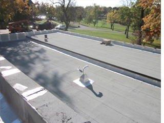
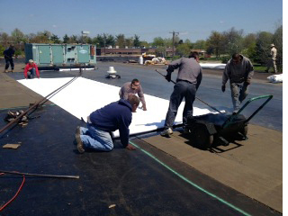
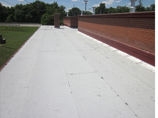
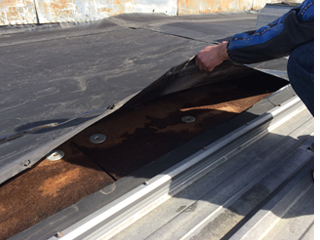
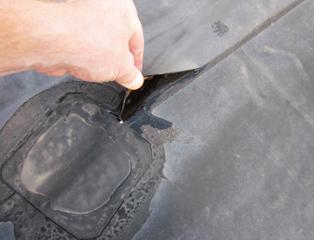
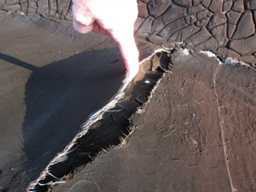
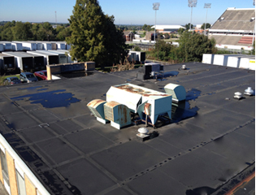
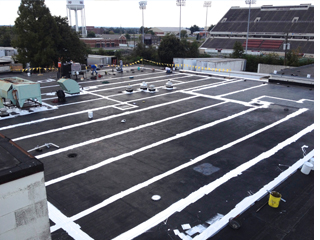
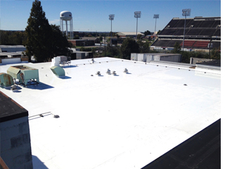

Roof Replacement
|  |  |  |
Whether it be an existing roof system or new construction, Pearce-Blackburn can assist in a roof solution that’s right for your facility. We install all types of commercial roofing including: Single-Ply, Built-Up, Modified and Metal. Projects ranging in size from 1,000 sq. ft. - 100,000 plus sq. ft.
Leak Detection/Roof Repairs
|  |  |  |
Every leak detection team has a combined 15 yrs. experience in commercial roofing.
Coatings/Restorations
|  |  |  |
Coatings and restorations can be performed on all types of commercial roof systems including Single-Ply (EPDM, TPO, PVC) Built-up Roofs, Modified Roofs and Metal Roofs.
Roof Asset Management Services
Professional roof management services are designed to extend the working life of your roof while increasing the value of your facility. Our maintenance services include:
Inspection:
Visual inspection of roof membrane, flashings, drains, accessories and roof related items.
Minor Repairs:
Minor repairs for small punctures, caulking, tightening drain bolts, open flashing laps etc.
Exterior Cleanup:
Removal of debris from gutters, drains, scuppers and the field of roof system.
Written Documentation:
A photographic comprehensive report with before and after photos along with any recommendations for any required repairs or corrective actions needed on your roof system.